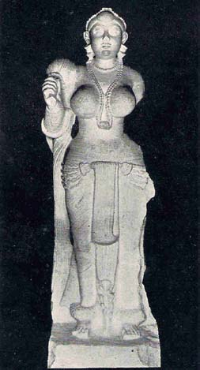

Selected Examples of Indian
Painting and Sculpture
BY O. C. GANGOLY
XIII. A CHAURI-BEARER
From Didarganj, Bihar Mayurian School, Circa 350 B. C.
(Collection of Research Society's Museum, Patna, Bihar)

A CHAURI-BEARER
The early school of Mayurian sculptures occupies a position very peculiar in the histOry of Indian Art. It belongs to a period of time when Indian culture and political conditions were in free and independent contact with the Western world, which lent to the attitude of Indian princes a wide and a cosmopolitan outlook. Chandragupta marries a Greek Princess, and receives at his Court an ambassador of Seleukos. Asoka sends missionaries to distant places beyond the frontiers of India. Yet the art of the Mayurian period is almost free from any suggestions of contact with Hellenistic or Iranian forms. The wonderful carvings and sculptures of the Mayurian school are characterized by a marvelous precision and accuracy, and a skilful manner of polish which has come to be accepted as a characteristic of the period and which bespeaks centuries of sculptural practice in stone, free from any manner of foreign influences.
Though generally exemplified by the capital of Asoka's column lat Sarnath, the school of Mayurian sculpture has not survived in any worthier specimen than the well-known masterpiece in the Patna Museum, here reproduced. Somewhat related in the general feeling,
type, and manner of costume, to the older and archaic colossal lady from Besnagar, this chauri-bearer stands midway between the old Indian archaic school, surviving in the early terracottas, on one hand, and the later indigenous schools of Sanchi, Mathura and Amaravati on the other. The type of the figure of a woman, with full busts, arms heavily encircled with bangles, and legs rivetted on the pedestal, with heavy anklets and with a characteristic girdle round the heavy hips, answers to a conception of womanly beauty which derives its inspiration from Vedic literature, and which develops in more luscious and sensuous forms in the art of Amaravati and in the poems of Kalidasa. In this early presentation of the charm of Indian womanhood, there is hardly any suggestion of sensuality, though there is a frank and even a naive emphasis on the sex-idea, the upper part of the body being fully undraped to expose the symbols of motherhood, free from the arrogance of immodesty, or the diffidence of false shame. There is a grandeur, a serenity, and a static dignity in the pose, which almost invests the conception with the remoteness and abstract loveliness of a divine image. One is hardly prepared to accept this conception as the presentation of a subordinate attendant–a chauri-bearer,–fulfilling the humble role of brandishing the flywhisk for the benefit of a higher personage. Her own portrait carries all the insignia and beauty, all the air and the status of queen, a yakshini, or a goddess herself. But the enigma of her personality has been a despair to learned archaeologists, and if we are unable to solve the mystery, we are left in no doubt as to the high quality of this apotheosis of Feminine Beauty, standing on a much higher plane than the yakshinis and dryads of Sanchi and Bharhut, or the Venuses of Greek conception. All lovers Beauty will willingly bend their knees before this shining, haunting, and mysterious image of a Mayurian Minerva.